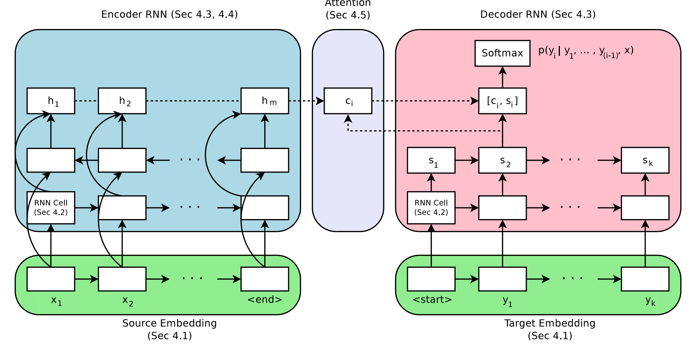

Cuisine Transformation
By swapping out ingredients, we aim to transform one cuisine to another. This is a small subproblem to the question Can Computers Cook .

Data is a property of Complex Systems Lab IIITD hence not available in the repo.
Word2Vec used to vectorize recipes in the Encoder-Decoder model.
Scoring Scheme - Output Ingredient gets +1 if its category matches with Input Ingredient. So the score for the recipe becomes the average of the individual score and the final score is the average of recipe scores.
To tackle the cuisine transformation problem, two different models were used.
- Encoder-Decoder - Similar to the model used in this paper, a Bi-GRU was used as an encoder while the decoder comprised of 2 GRU's. The initial state of the decoder was set to the final state of the encoder. From the list of ingredients for every recipe, 3 random ingredients were removed and those 3 were put into the output. The cuisine name was also given as input after being one hot enoded. This made the train test data for the project. Different variations of the model were tried like making 3 different decoders for the 3 ingredients to be predicted or adding attention to the encoding layer. Various dropout combinations were tried but all of them gave similar results which were averaging to 25% accuracy according to our scheme with only ~20 unique words being predicted.

- RoBERTa - builds on BERT which is a self-supervised pretraining technique that learns to predict intentionally hidden (masked) sections of text. Using the same configuration as Roberta, a model was trained on the vocabulary of our dataset. Instead of 3 ingredients only 1 random ingredient was removed and reserved as output. As no additional input could be given, every cuisine would need a specific model so only Italian and the Middle East were tried to evaluate the performance. This model performed significantly better in terms of unique words - around 300 for Italian and 120 for the Middle East. But the prediction accuracy was still ~22%.

Drawbacks/ Potential Issues - This problem is a subproblem os the AI recipe generation problem and it would be better if it was a tackle with that perspective rather than considering it an NLP problem. If ingredient flavor molecules could be known and quantified, they would possibly act as great features for such a problem. Also, when the previous issues are dealt with, issues with the scoring criteria would also be solved because currently for a prediction to be correct an additive must always be replaced by an additive and so on for other categories.
Repository